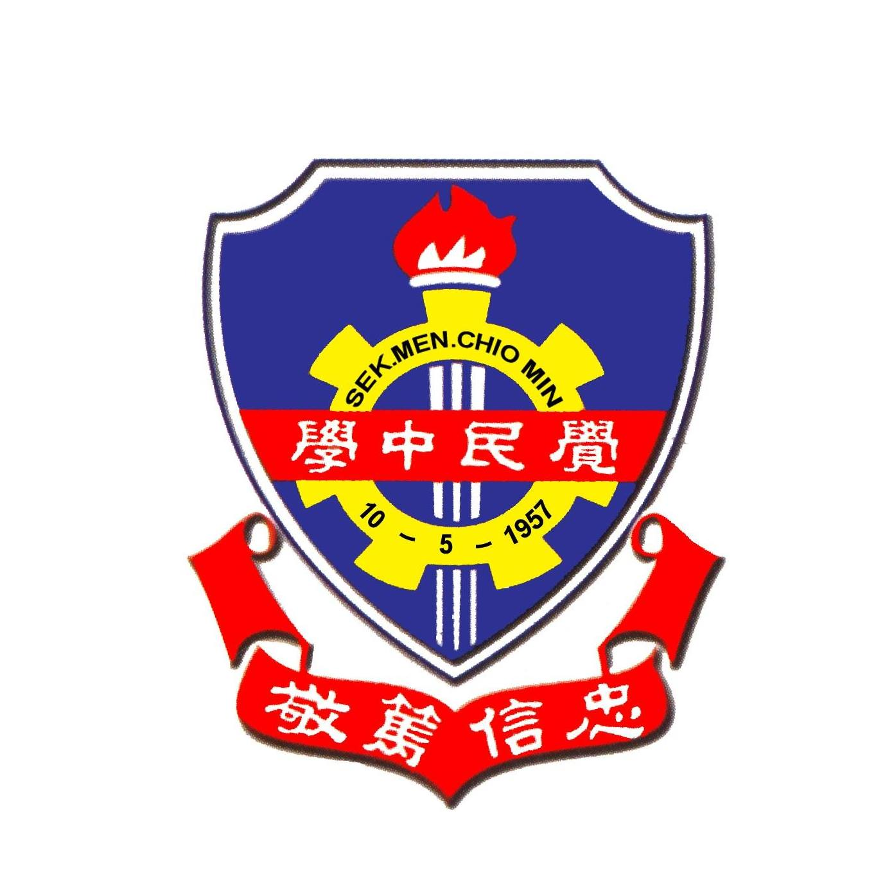
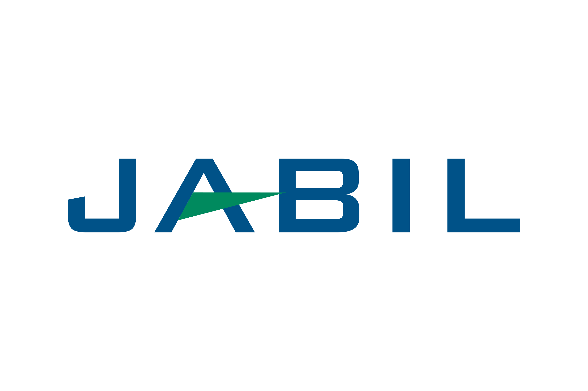

About Me

Hi, Nice To Meet You! I'm Tan Jit Sheng, a passionate developer with experience in web development, Internet-of-Things and problem solving. I enjoy building projects that make an impact and learning new technologies.
I'm always excited to work on innovative solutions and collaborate with like-minded individuals who share a passion for technology and creating meaningful digital experiences.
Education
Bachelor of Computer Engineering with Honours
Universiti Teknikal Malaysia Melaka
Currently pursuing a comprehensive degree program focusing on computer systems, software engineering, and digital technologies.
Diploma in Electronic Engineering
Universiti Teknikal Malaysia Melaka
Completed diploma program with focus on electronic systems, circuit design, and embedded technologies.
SPM (Malaysian Certificate of Education)
SMK CHIO MIN
Successfully completed Malaysian Certificate of Education with strong foundation in mathematics and sciences.

Projects
Smart Indoor Plant Watering System using Internet-of-Things (2022)
Diploma Final Year Project to develop an automated system for watering indoor plants using IoT technology.
View on YoutubeFruit Grading System using Yolo and HSV Color Model (2026)
Group Project focused on developing a system for grading fruits based on color and shape using Yolo and HSV color model techniques.
View on Youtube (Part 1) View on Youtube (Part 2)Real-Time Monitoring and Fault Detection In Soalr PV System Using IOT And Machine Learning (InProgress)
Automated and low cost system that collect electrical and environmental data for Solar PV System with TinyMl on ESP32.
View Proposal on CanvaWork Experience
Jabil Circuit Sdn. Bhd.
- Conducted feasibility testing for defect detection and object locating. Calibrated lenses and adjusted industrial lighting to optimize image capture accuracy.
- Developed a wireless MQTT-based alert system using a Raspberry Pi 4B to trigger visual (LED) and audio (buzzer) error signals. Programmed GPIO logic for real-time response.
- Managed issue tracking and production-related requests and took responsibility for documenting root cause analyses of bugs or logic faults during application development.

Sophic Automation Sdn. Bhd.
- Handled Graphical User Interface (GUI) and program backend using C# language, covering program logic, database integration, and data analytics.
- Performed testing and debugging of applications to ensure they met client expectations.
- Contributed to the development of a large-scale Inventory Management System for a global semiconductor leader and an automated smart-locker solution for a multinational food and beverage corporation.
Contact
If you want to get in touch, feel free to reach out through any of these channels. I'm always open to discussing new opportunities, collaborating on interesting projects, or just having a conversation about technology!